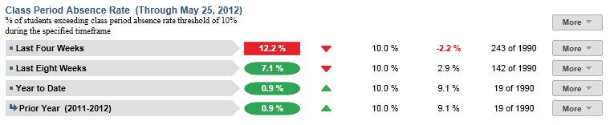
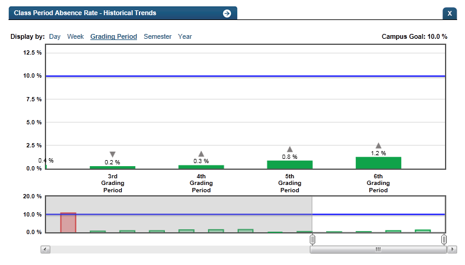

Dashboard Metrics


Class Period Absence Rate
Background
Campus Dashboard Metrics
Because of the value of attendance as a key leading indicator of student performance, virtually every performance management dashboard should include a measure of student attendance or absenteeism. This need was echoed in focus groups conducted with educators, in which student attendance was consistently named as one of three top data needs. Further, the Class Period Absence Rate metric, as presented in screen shots of the campus dashboard, was considered useful by 96% of those surveyed.
Primary Metric
- Class Period Absence Rate: percentage of students missing two or more class periods during the past four weeks, past eight weeks and year to date, with comparison to the campus goal for each.
Related Metric
- Daily Attendance Rate: percentage of students in attendance during the past four weeks, past eight weeks and year to date, with comparison to the campus goal for each.
User Interface
Dashboard Example
Figure 1 shows the Class Period Absence Rate metric as seen on the campus dashboard.

Figure 1 Ed-Fi Class Period Absence Rate Metric
Status Definition
The Status Indicator is determined by campus-specific thresholds (campus goals) which are set at the district level and displayed in the column for campus goal. The Ed-Fi dashboards default thresholds for each time frame is 10%.
Table 2 lists the status indicators and trend comparisons as seen on the campus dashboard.
Metric Indicator | Comparisons | |||
Metric Name | Sub-metric Name | Metric Status Indicator | Trend | Campus Goal (Delta) |
Class Period Absence Rate | Last Four Weeks | Red (Percentage) = if Class Period Absence Rate is greater than or equal to campus goal Green (Percentage) = if Class Period Absence Rate less than campus goal | Current and prior four weeks (20 instructional days) Begins 40 instructional days into the school year | Campus goal and the calculated class period absence rate |
| Last Eight Weeks | Red (Percentage) = if Class Period Absence Rate is greater than or equal to campus goal Green (Percentage) = if Class Period Absence Rate less than campus goal | Current and prior eight weeks (40 instructional days) begins 80 instructional days into the school year | Campus goal and the calculated Class Period Absence Rate | |
Year to Date | Red (Percentage) = if Class Period Absence Rate is greater than or equal to campus goal Green (Percentage) = if Class Period Absence Rate less than campus goal | Compares current year to prior year | Campus goal and the calculated Class Period Absence Rate | |
(a) The Value column displays the number of students that miss two or more class periods out of the total number of students.
Trend Definition
Table 3 lists the trend indicators for the Class Period Absence metric.
Trend Indicators: Objective is to indicate Daily Attendance Rate | |||
| Up Green | If the value for the current time frame is more than 5 percentage points higher than the prior time frame | |
| Unchanged | If the value for the current time frame is less than or equal to 5 percentage points higher or less than or equal to 5 percentage points lower | |
| Down Red | If the value for the current time frame is more than 5 percentage points lower than the prior time frame | |
The trend does not show for the first time frame as data is not available.
Delta Definition
Delta Indicators: Objective is to indicate Class Period Absence Rate | |||
Metric Name | Sub-metric Name | Campus Goal | Delta |
Class Period Absence Rate | Last Four Weeks | Set campus goal | Red (Percentage) = if the calculated delta is less than the campus goal Black( Percentage) = if the calculated delta is equal to or greater than the campus goal |
Last Eight Weeks | Set campus goal | Red (Percentage) = if the calculated delta is less than the campus goal Black( Percentage) = if the calculated delta is equal to or greater than the campus goal | |
Year to Date | Set campus goal | Red (Percentage) = if the calculated delta is less than the campus goal Black( Percentage) = if the calculated delta is equal to or greater than the campus goal | |
Periodicity
Since class absence rate is a leading indicator of performance, best practice is to load this data on a more frequent basis, at least weekly, though there is still some benefit from loading it monthly.
Recommended Load Characteristics | |
Calendar | Throughout the school year |
Frequency of data load | Daily, Weekly, Monthly |
Latency | 4 weeks |
Interchange schema | Interchange-StudentAttendance.xsd |
Tooltips
The standard tool tips for the metric definition, column headers, and help functions display for this metric.
The following are tooltips specific to the Class Period Absence Rate metric:
- '+ More' indicates drill down to view ‘Class Period Absence Rate Detail’
 is ‘No change from the prior period’
is ‘No change from the prior period’ is ‘Getting worse from the prior period’
is ‘Getting worse from the prior period’ is ‘Getting better from the prior period’
is ‘Getting better from the prior period’
Business Rules
The Class Period Absence Rate metric displays the percentage of students missing two or more class periods for the specified time frames:
- Last Four Weeks
- Last Eight Weeks
- Year to Date
The following additional rules apply when calculating this metric:
- Both excused and unexcused absences are counted
- A tardy or early release (if captured) is not counted as an absence
The length of each time frame is configurable and is defined by the district—typically either 6 or 9 weeks.
Data Assumptions
- Campus must record student absences at the classroom level for each specified time frame.
- Student absences are categorized (i.e., excused, unexcused).
- District sets the value that drives the campus and student status thresholds.
- The metric does not account for students missing roll call or educators not taking roll.
Computed Values
The campus metric is a roll-up for the cohort of current students, at the time of last upload.
Table 6 defines how values are calculated for each time frame. The result of the calculation displays in the Status column on the campus dashboard.
Metric Values | ||
Class Period Absence Rate | Last Four Weeks | Number of current students who have missed 10% or more class periods in the last four weeks / Number of students enrolled in the last four weeks |
Last Eight Weeks | Number of current students who have missed 10% or more class periods in the last eight weeks / Number of students enrolled in the last eight weeks | |
Year to Date | Number of current students who have missed 10% or more class periods year to date / Number of students enrolled in the last school year | |
Data Anomalies
Anomalies
- Metrics are sensitive to when and how often the data is loaded.
- Late enrollees are likely to be missing attendance and discipline data. The calculation for the metric value is not dynamic. However, detail views on class period absences will display more information.
- If the school calendar changes, then adjust the denominator to reflect eligible days.
- Create an icon (not implement) that shows if data was last data loaded was more than a month ago.
Best practice is to use footnotes to address these anomalies.
Footnotes
Footnotes are used to provide additional information concerning the metric. Footnotes are sequential for the entire page. Therefore, a metric's footnote may not begin with the number 1.
The following footnotes appear below the metric:
- Students transferring in that have not been present for a full grading period should be noted by a designated icon.
- If the school calendar changes, then adjust the denominator to reflect eligible days.
Date of Refresh
Best practice is for the date of last data refresh to appear next the metric in the following format:
- (Through April 22, 2010)
Implementation Considerations
Student Identity
Student Identity is a complex type within the UDM to maintain the referential integrity of the student (that is, making sure that the data associated with each student is accurately associated with the right student). The complex type of the student reference assists with implementing the accurate matching algorithm to identify a student by utilizing any of the individual attributes (e.g., Student Unique State ID, Student ID, Campus Local ID, Name, and Birth Date). For example, if the Student Unique State Id is unknown, you can find the student’s identity by their Student ID, First Name, Last Name and Birth Date.
Late Enrollments
For late enrollment students, class period attendance data may not be available from their prior school. Because late enrollment students still enrolled in the campus are included in the cohort, the class period absence rate may be understated for the time periods when late enrollment students are not present.
Classification of Days as Non-Instructional Days
For the computation of the number of instructional days, use the total count of instructional days in a period or utilize the school calendar to identify specific instructional days for the grading period as the denominator for the percentage. The latter is a more accurate approach to calculating the metric with the caveat that this requires frequent uploading of data throughout the school year.
Types of Absences
It is important to determine what your Student Information System (SIS) captures for the absence types and absence reasons. The type of absences, also known as Attendance Event Descriptor, captured in the SIS consists of tardy, excused, or unexcused absences.
For example, Ed-Fi dashboards default for this metric uses excused and unexcused absences. The reason for excused absences is displayed (see Drill Down section). Tardy occurrences are measured as a separate metric.
Students with No Absences
When taking roll at the classroom level, campuses typically record student absences, but do not record if a student is present in a class. The query to compute student absences needs to account for students with null attendance, which is perfect attendance.
Frequency of Uploading Data
The metric computation implementation may vary depending on the periodicity of loading the data. For example, a daily load requires that you load data for only a single day (i.e., the last instructional day). Less frequent uploads require that you load data for each day since the date of the last load.
Campus Goals
Best practice is to set the campus goals for each campus at the district level. A secure mechanism is required to allow the district to set and maintain those thresholds.
Database Table Scalability
Daily attendance is one of the largest student datasets to maintain. To limit the size of daily attendance, developers may include only the current year’s data.
To aid in planning for dataset management, one benchmark from the Ed-Fi dashboards load testing is that the daily attendance data for roughly 48,500 students for half of the school year required 8.3 million rows, or approximately 171 rows per student.
Aggregate Metric Inclusions and Exclusions of Special Education Students
Each campus's aggregate metrics may include or exclude the special education population, depending on the intended purpose for a specific metric and campus goal.
Drill Downs
Drill Down Views
The dashboards include the option to drill down and see more detail that is associated with a metric. Table 7 lists the drill down views that are recommended for this metric.
| Grade Level | Graph of test assessment detail by grade level | |
| Historical | Graph of metric values across days, weeks, grading periods, semesters, and years | |
| Student List | List of students who do not meet the threshold for this metric for the specified period. |
Business Rules
The Historical Graph allows the user to see historical data across multiple timeframes. As time passes, there are many bars to be displayed; therefore, the slider on the bottom allows the user to adjust the number of bars displayed as well as the time period shown. The timeframes for this metric were chosen based on educator feedback.
User Interface
Dashboard Example
Figure 2 shows Historical Class Period Absence Rate as seen in the campus dashboards.

Figure 2 Ed-Fi Historical Class Period Absence Rate